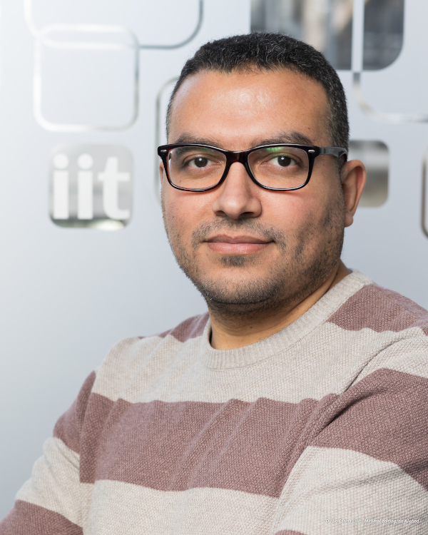

Postdoctoral Researcher · Nanoscience
Exploring the nano-bio interface — from protein corona dynamics to nanozyme catalysis. Currently at the Italian Institute of Technology, Genoa.

My work sits at the intersection of nanomaterials, biochemistry, and cell biology. I design and functionalize nanoparticles — tuning their surface chemistry to control how they interact with proteins, bacteria, and living cells.
Currently I'm investigating the enzymatic behavior of nanozymes: nano-scale materials that mimic biological enzymes, with potential applications in diagnostics, catalysis, and biomedicine.
FCS-based analysis of biomolecular adsorption on NPs
Peroxidase & GOx-like activity of metallic nanostructures
Nanoclusters for label-free microbial discrimination
Protein oxidation vs protection — the dual behavior of metallic nanozymes
Interfacing with the Brain: How Nanotechnology Can Contribute
BSA-protected copper nanoclusters as a label-free biosensor for bacterial discrimination
Postdoctoral researcher at the Italian Institute of Technology